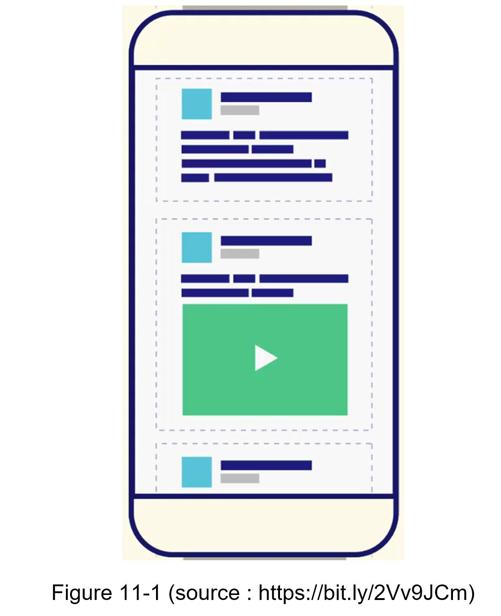

In this chapter, you are asked to design a news feed system. What is news feed? According to the Facebook help page, “News feed is the constantly updating list of stories in the middle of your home page. News Feed includes status updates, photos, videos, links, app activity, and likes from people, pages, and groups that you follow on Facebook” [1]. This is a popular interview question. Similar questions commonly asked are: design Facebook news feed, Instagram feed, Twitter timeline, etc.
